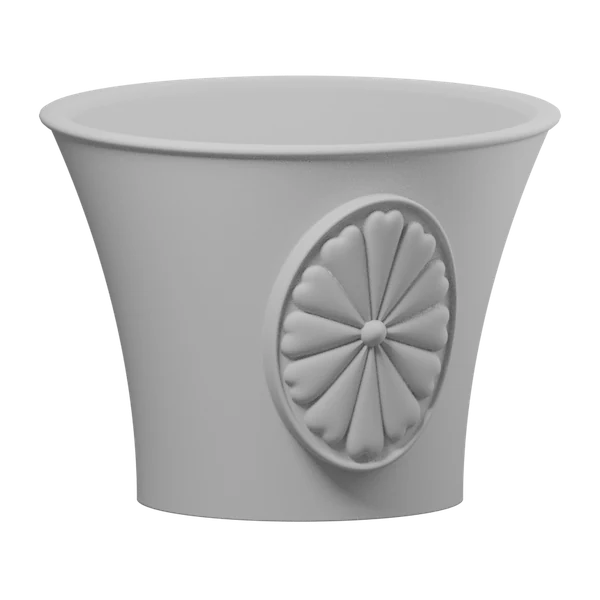

Загружаем 3D-модель…
Тяните, чтобы вращать. Сводите пальцы для масштаба.
Стаканчик с медальоном
Овальная розетка с двенадцатью лепестками повторяет изгиб стенки. Корпус и медальон печатаются одной деталью.

Загружаем 3D-модель…
Овальная розетка с двенадцатью лепестками повторяет изгиб стенки. Корпус и медальон печатаются одной деталью.